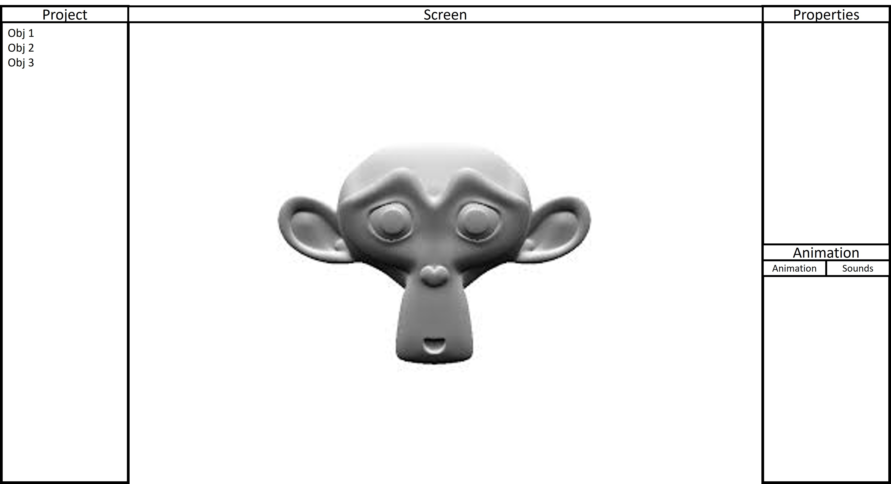

1. Bevezetés
2. Telepítés
3. Projektek Kezelése
4. Grafikus Felhasználói Interfész
4.1. Az Immediate Mode GUI használata
4.2. Hogyan hozzunk létre elemeket
5. Kamera és objektum pozícionálás
5.1. Objektumok létrehozása és pozícionálása
5.2. Kamera kezelése
6. Hangok használata
7. Market használata
A bővítés részei a low budget miatt
8. Fizika és Mozgásvezérlés
8.1. Fizikai motor használata
8.2. Karakterek és objektumok mozgatása
A program egy multi-purpose 3D-s játékmotor, ami képes képes a legtöbb 3D-s formátumot, valamint képes a legtöbb képformátumot kezelni.
A program telepítés interneten keresztül történik regisztráció után. Az alkalmazás számítógépre történő letöltése után azonnal használható.
A menüsor bal szélén a File pont alatt a lehet létrehozni új projektet, menteni a jelenlegit, valamint megnyitni előző projekteket.
A felhasználói felület ablakos felosztású. Bal oldalt a Projekt nevű ablak van, ami a prjekt által tartalmazott objektumok vannak, középen ezek vannak megjelenítve dinamikus formában. Jobb oldalon van a kiválasztott objektum tulajdonságait tartalmazó ablak a Properties, alatta pedig ay Animációk ablak.

Új elemet az Projekt ablakban található + jellel lehet hozzáadni.
Amit uténna a megjelenő ablakon át lehet kiválasztani a fájkezelőből.
A bal oldalon található a projek által tartalmazott objektumok. Az objektom kiválasztása után a jobb oldali Properties ablakban lehet beállítani ay objektum pozícióját és elforgatását.
A kamera is egy objektumként van kezelve, így a mozgatása és dőlésszögek beállítása a 5.1.-ben leírt módon történik.
A jobb oldalon, a lent található Animáció ablakban a Hangok fül alatt lehet hozzáadni, valamint beállítani a hanghatásokat.
A jobb oldalon található Market gombbal lehet megnyitni az online felületet, amelyről kész modelleket, valamint projekteket lehet letölteni, amit egy keresés funkció segít. Illetve ide lehet akár kedv szerint feltölteni is.